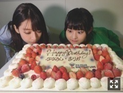
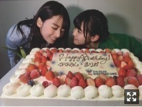
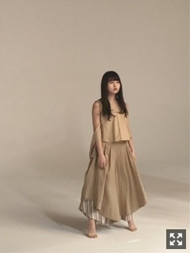
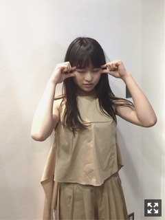

「乃木坂46～5TH YEAR BIRTHDAY LIVE～」
さいたまスーパーアリーナで3日間。
来てくださった皆様、
ありがとうございました。
憧れの空間にいられて本当に幸せでした。
音席もしっかり声が届いていました！
奈々未卒業おめでとう！
生まれたままでを一緒に歌えてよかったと
思ってたらケーキのサプライズとか！
びびりました、、
セトリの時点で充分優しさを感じてたのに！


お疲れ様でした！
映像作品に出てる奈々未が特に好きで、
良いなと思う瞬間をたくさん記憶している。
それが今後見れなくなると思うと
あ、楽しみが減ってしまう、という気持ち。
デビューから今まで、
2日しか違わない乃木坂バースデーと共に
こうしてお祝いしてもらっていたけど、
毎度毎度自分が情けない気持ちに
なっていたのね。
それくらい奈々未は
乃木坂にとって大きな存在だから。
今回のステージに立つ姿を見た時も
改めて偉大だと思ったなあ
今年の20日は、
奈々未が乃木坂にいる最後の日で
盛大に見送らないとな、
あーまだまだ超くだらない話したいな、
寂しい、そればかりだったのに。
メンバーのこと考えてくれてありがとね、
愛情をありがとう。
私は21歳を迎えました。
昨年いっこ衝動が走って行動してからは
すとんと何か落ちた感じです。
乃木坂ってグループ自体は知っているけど
まだ私のこと知らない人だらけ。
5年経ってやっと気づいたことたくさんある。
この年齢になったからこそ
考えることがいっこ変わったりした。
いまの環境の有り難みと
いま求められることの有り難み。
ちゃんと返していくことが
ここにいてできることだなと感じます。
おもしろいことたくさんしたいな、
それらは時間かけてコツコツと絶対にやる。
振り返って楽しかったなーって思い出して、
おもしろい発想がいっぱい浮かんできて
踊って、つくって、その空気を吸うこと
これらの瞬間が今の私の幸せです。
乃木坂46は6年目に突入するんだなあ
一人ひとりがもっと大きくなって
強いグループにしていかないと。
ここにいてできないことを
できるように開拓していかないと。
ひとつひとつ大切に取り組んでいかないと。
楽しまないと。
そんな気持ちです！


BRODY見てね〜
ベージュ女子
27日のトークショーは
限定感出そうと計画中です！
まりか